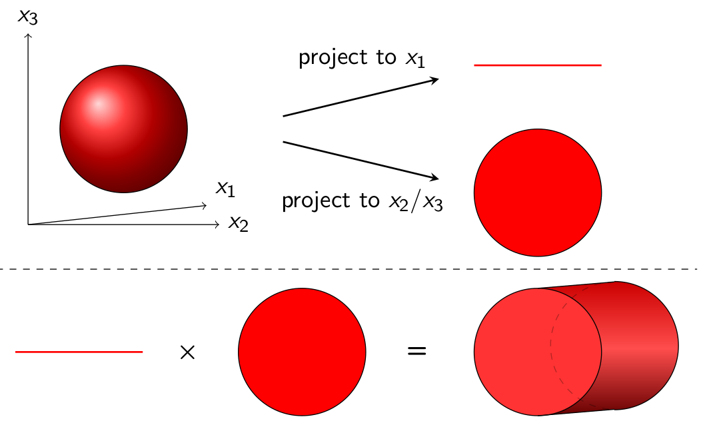

Exploiting structure
In this section we explore different techniques that in one way or another exploit the structure of the initial-value problem, or the type of verification that we want to perform on the outputs.
On-the-fly property checking
- In this section we consider reachability analysis for subsets of variables
of a given linear system.
- Method to lazily compute the flowpipe when we are only interested in outputs.
- Example with linear combination of state varibles with LGG09 (eg. some of SLICOT benchmaris properties).
State-space decomposition
- A section about BFFPSV18.

Sparse systems
- Show option when Phi is sparse.
Krylov subspace iterations
- Show case using Krylov when the state matrix is sparse.